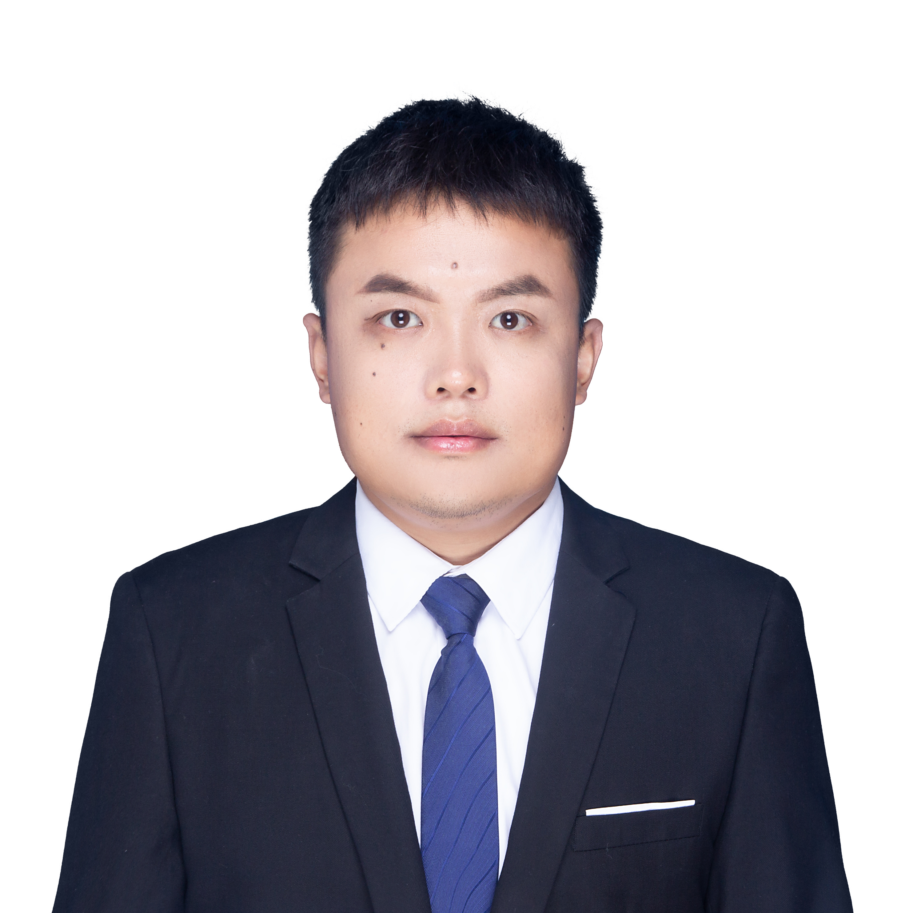

|  |
Jian Liu (刘健)[jliu83@zjut.edu.cn]Assistant Professor in the Department of Computer Science and Technology at Zhejiang University of Technology. He received PhD degree from Louisiana State University in 2021. His research interests focus on flash-based storage/caching systems, time-series data storage, data deduplication, object-based storage, etc. |